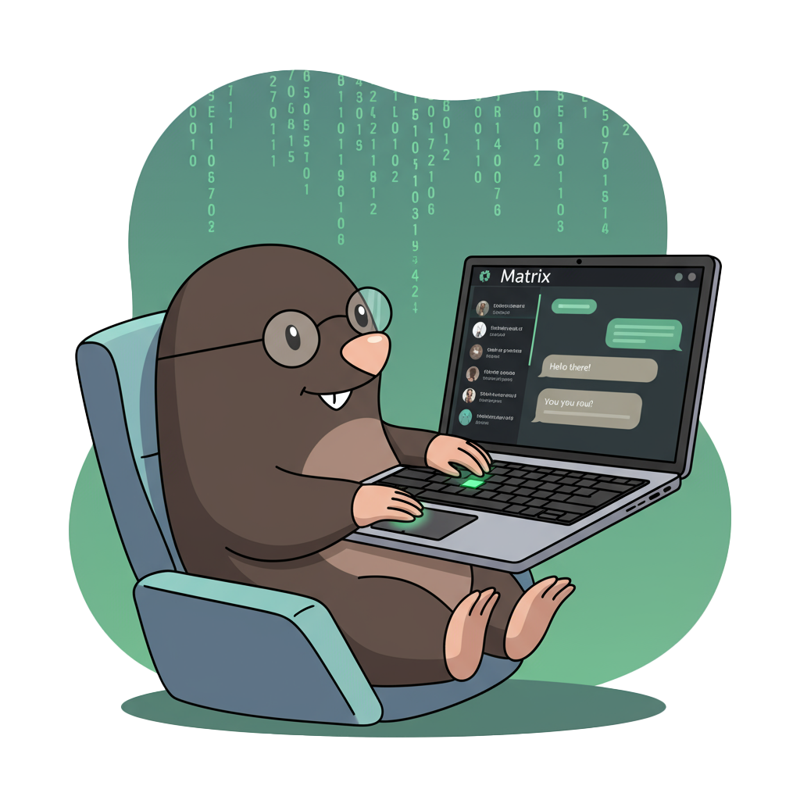

Alarmstufe Rot! Jemand hat sich in unseren hochsicheren Kommunikationsraum
eingeschlichen...

...und liest Staatsgeheimnisse mit.
🚨
🛰️ Deine Mission
Identifiziere den Maulwurf und melde ihn an die zuständigen Autoritäten. Bleib ruhig, arbeite präzise – und
vertraue deinen Augen nicht blind, denn der Angreifer spielt mit subtilen Zeichen.
🗒️ Informationen zur Mission
Wir haben Zugriff auf die aktuellen Raumteilnehmer
(room_members.json)
und eine signierte, zugelassene Föderationsliste
(fedlist-jws.txt).
Deine Aufgabe ist es, die Teilnehmer im Raum gegen die zugelassene Föderationsliste abzugleichen und
potenzielle Manipulationen aufzudecken.
Vergleiche alle MXIDs aus room_members.json mit den zulässigen Einträgen aus
fedlist-jws.txt.
Markiere Teilnehmer, die nicht in der Föderationsliste enthalten sind oder deren MXID von der zugelassenen
Schreibweise abweicht.